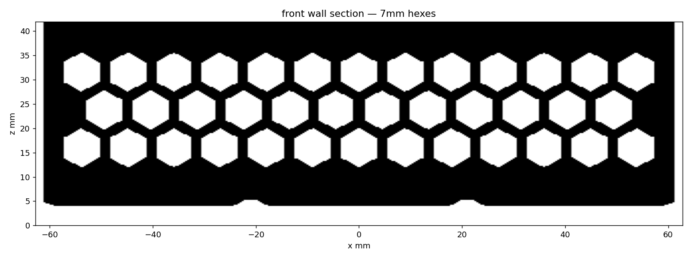
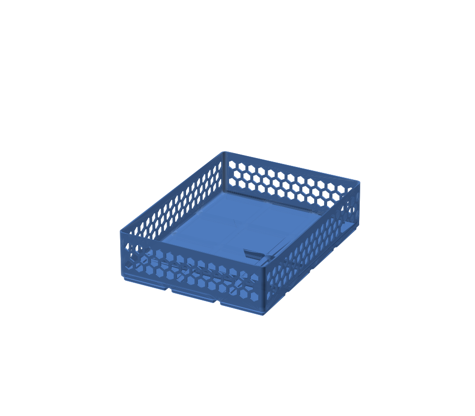

🔩 Gridfinity Hex Bin — 3×4, 7 mm honeycomb walls
Built with
ostat/gridfinity_extended_openscad
· rendered with OpenSCAD nightly 2026.09.07
🖱️
Drag
to spin ·
wheel / pinch
to zoom ·
right-drag
to pan · auto-rotates when idle

Ground-truth cross-section through the front wall centre — 7 mm hex holes, solid rim + floor

Static shaded render
Footprint
126 × 168 mm (3×4 gridfinity cells @ 42 mm pitch)
Height
42 mm (6 × 7 mm U)
Wall pattern
hexgrid, cell 7 mm across flats
Volume
118.8 cm³ · watertight single body
Print
Flat, no supports, PLA or PETG
⬇ Download STL